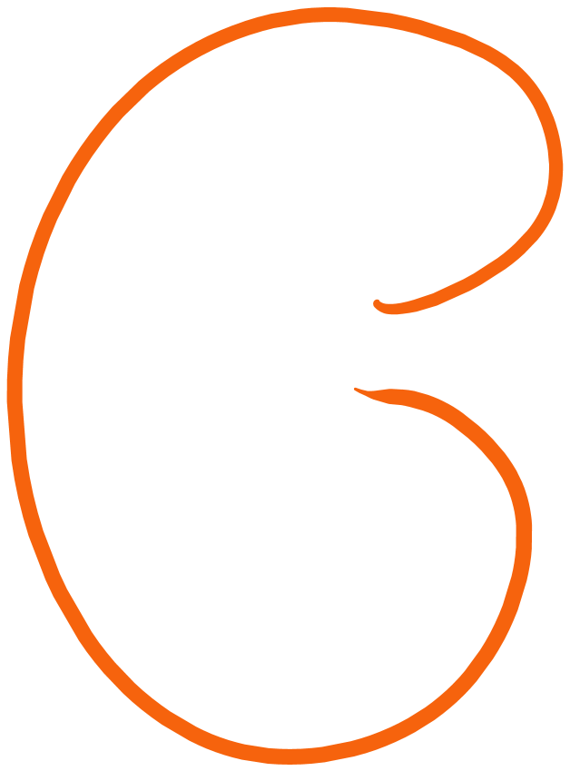

Kidneys
Description
The human excretory system is a complex system that removes waste and excess substances from the body. It consists of several organs and systems that work together to maintain homeostasis and eliminate waste products. The main components of the human excretory system include:
Click on the code to view more